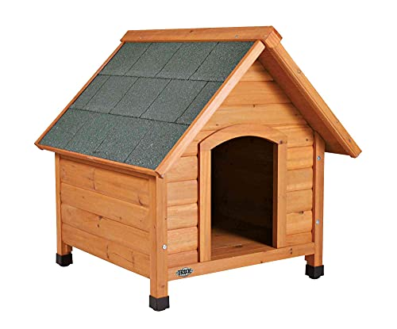

Caring for dogs is not just a responsibility, but a beautiful bond that enriches our lives. Dogs are more than just pets; they're loyal companions who depend on us for their well-being. Providing love, attention, and proper care is essential. Regular exercise, nutritious food, and clean water are the foundation of their physical health. Regular vet check-ups ensure they stay happy and healthy. Equally important is the emotional care: spending quality time, offering affection, and creating a safe and loving environment. Dogs thrive on routine, training, and socialization. By giving them the attention and care they deserve, we can ensure a fulfilling and joyful life for our furry friends.
Dog Home
When it comes to buying a dog home, also known as a dog kennel or doghouse, there are several do's and don'ts to consider:
BAD house:
Good house have a lot of space (with hiding places for dogs to sleep to. )
These houses can come in many different forms that you can either build yourself or buy prebuilt.
Here's an example of a GREAT house:

Here's a video on how to build a great house (for about $40), similar to what you see
in the image above (YouTube channel: Scotty's Animals):
Diet
4
What a Dog eats is very important! Feeding and caring for your dog properly is essential for their health and well-being..
Proper dog care involves providing a balanced diet, regular exercise, and healthcare while ensuring a loving and safe environment for your furry companion. Consult with a veterinarian to tailor care to your dog's specific needs.nutrition chart.
chocolates and deep fried foods are very harmful for dogs because it can couse infection to theor skin.
A video on good diet practices (YouTube Channel: Erin's Ark):
A video about treats and snacks :
Social Environment
Furball Friends for Your Furball
The social environment of dogs plays a crucial role in their well-being and behavior. Dogs are inherently social animals with a strong capacity to form bonds with other dogs and humans. In a domestic setting, their social interactions are influenced by their interactions with family members, other pets, and the broader community. Positive socialization experiences during puppyhood are essential for a dog's ability to adapt to various social situations later in life. Additionally, the quality of their social environment can impact their temperament, emotional health, and overall happiness. Dogs thrive when they are given opportunities for social engagement, exercise, and positive reinforcement, which contribute to a well-rounded and content canine companion.